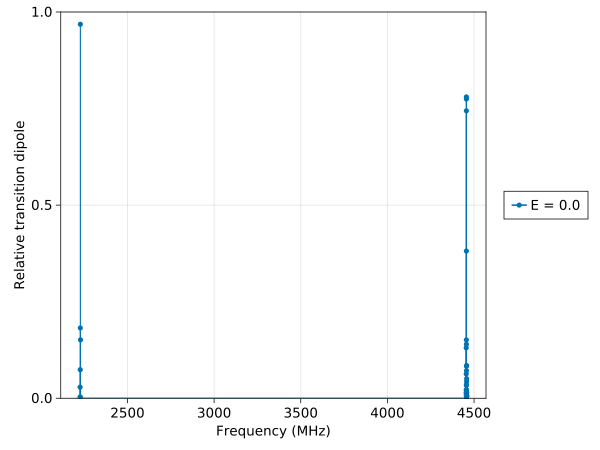

Getting started
Installation
This package is not yet registered with the Julia package manager.
From the REPL, do
julia> import Pkg
julia> Pkg.add(url="https://github.com/kylematsuda/BialkaliSpectrum.jl")Now bring the package contents into scope:
julia> using BialkaliSpectrum
You can optionally also pull in molecule-specific definitions, which are kept in different submodules (BialkaliSpectrum.K40Rb87, BialkaliSpectrum.Toy, etc.):
julia> using BialkaliSpectrum.K40Rb87 # optional, brings all KRb-specific stuff into scope
First calculation
Setting up
Before doing the calculation, we need to do a little bit of setup: construct the Hamiltonian and choose the external fields to use in the calculation:
julia> parts = make_krb_hamiltonian_parts(5);julia> fields = ExternalFields(545.9, 0.0, []) # B = 545.9 G, E = 0, no optical fieldsExternalFields(SphericalVector(545.9, 0.0, 0.0), SphericalVector(0.0, 0.0, 0.0), SphericalVector[])
Finding the energy levels
Next, we call get_spectrum, which diagonalizes the Hamiltonian (constructed from parts) at fields.
julia> spectrum = get_spectrum(parts, fields)1296×13 DataFrame Row │ fields index energy eigenstate ⋯ │ External… Int64 Float64 SubArray… ⋯ ──────┼───────────────────────────────────────────────────────────────────────── 1 │ ExternalFields(SphericalVector(5… 1 -1.6672 ComplexF64[5.5 ⋯ 2 │ ExternalFields(SphericalVector(5… 2 -1.53563 ComplexF64[-1. 3 │ ExternalFields(SphericalVector(5… 3 -1.40404 ComplexF64[-3. 4 │ ExternalFields(SphericalVector(5… 4 -1.27245 ComplexF64[-2. 5 │ ExternalFields(SphericalVector(5… 5 -1.14086 ComplexF64[1.5 ⋯ 6 │ ExternalFields(SphericalVector(5… 6 -1.00925 ComplexF64[0.0 7 │ ExternalFields(SphericalVector(5… 7 -0.914827 ComplexF64[-5. 8 │ ExternalFields(SphericalVector(5… 8 -0.877637 ComplexF64[0.0 ⋮ │ ⋮ ⋮ ⋮ ⋱ 1290 │ ExternalFields(SphericalVector(5… 1290 33420.2 ComplexF64[0.0 ⋯ 1291 │ ExternalFields(SphericalVector(5… 1291 33420.2 ComplexF64[2.6 1292 │ ExternalFields(SphericalVector(5… 1292 33420.3 ComplexF64[0.0 1293 │ ExternalFields(SphericalVector(5… 1293 33420.3 ComplexF64[0.0 1294 │ ExternalFields(SphericalVector(5… 1294 33420.3 ComplexF64[0.0 ⋯ 1295 │ ExternalFields(SphericalVector(5… 1295 33420.3 ComplexF64[0.0 1296 │ ExternalFields(SphericalVector(5… 1296 33420.4 ComplexF64[7.7 10 columns and 1281 rows omitted
The output is a DataFrame. We can inspect its columns:
julia> names(spectrum)13-element Vector{String}: "fields" "index" "energy" "eigenstate" "basis_index" "N" "m_n" "I_1" "m_i1" "I_2" "m_i2" "B" "E"
Descriptions of these fields can be found in the documentation for get_spectrum.
Working with the output DataFrame
DataFrames.jl provides a nice API for manipulating the data that comes out of get_spectrum.
BialkaliSpectrum.jl provides a few convenience methods for working with DataFrames. Documentation of these methods can be found here: DataFrame helpers. Let's try a few of them:
julia> filter_rotational(spectrum, 0, 0) # get only the N = 0, m_N = 0 states36×13 DataFrame Row │ fields index energy eigenstate ⋯ │ External… Int64 Float64 SubArray… ⋯ ─────┼────────────────────────────────────────────────────────────────────────── 1 │ ExternalFields(SphericalVector(5… 1 -1.6672 ComplexF64[5.50915 ⋯ 2 │ ExternalFields(SphericalVector(5… 2 -1.53563 ComplexF64[-1.3928 3 │ ExternalFields(SphericalVector(5… 3 -1.40404 ComplexF64[-3.7018 4 │ ExternalFields(SphericalVector(5… 4 -1.27245 ComplexF64[-2.2646 5 │ ExternalFields(SphericalVector(5… 5 -1.14086 ComplexF64[1.53081 ⋯ 6 │ ExternalFields(SphericalVector(5… 6 -1.00925 ComplexF64[0.0+0.0 7 │ ExternalFields(SphericalVector(5… 7 -0.914827 ComplexF64[-5.8602 8 │ ExternalFields(SphericalVector(5… 8 -0.877637 ComplexF64[0.0+0.0 ⋮ │ ⋮ ⋮ ⋮ ⋮ ⋱ 30 │ ExternalFields(SphericalVector(5… 30 0.92291 ComplexF64[0.0+0.0 ⋯ 31 │ ExternalFields(SphericalVector(5… 31 1.00312 ComplexF64[-7.6245 32 │ ExternalFields(SphericalVector(5… 32 1.14082 ComplexF64[5.91633 33 │ ExternalFields(SphericalVector(5… 33 1.27851 ComplexF64[2.20859 34 │ ExternalFields(SphericalVector(5… 34 1.41619 ComplexF64[1.06597 ⋯ 35 │ ExternalFields(SphericalVector(5… 35 1.55387 ComplexF64[0.0+0.0 36 │ ExternalFields(SphericalVector(5… 36 1.69154 ComplexF64[0.0+0.0 10 columns and 21 rows omittedjulia> filter_rotational(spectrum, [1, 2, 3]) # get everything in N = 1, 2, 3540×13 DataFrame Row │ fields index energy eigenstate ⋯ │ External… Int64 Float64 SubArray… ⋯ ─────┼────────────────────────────────────────────────────────────────────────── 1 │ ExternalFields(SphericalVector(5… 37 2226.11 ComplexF64[0.0+0.0i ⋯ 2 │ ExternalFields(SphericalVector(5… 38 2226.2 ComplexF64[0.0+0.0i 3 │ ExternalFields(SphericalVector(5… 39 2226.22 ComplexF64[0.0+0.0i 4 │ ExternalFields(SphericalVector(5… 40 2226.28 ComplexF64[0.0+0.0i 5 │ ExternalFields(SphericalVector(5… 41 2226.31 ComplexF64[0.0+0.0i ⋯ 6 │ ExternalFields(SphericalVector(5… 42 2226.37 ComplexF64[0.0+0.0i 7 │ ExternalFields(SphericalVector(5… 43 2226.42 ComplexF64[0.0+0.0i 8 │ ExternalFields(SphericalVector(5… 44 2226.44 ComplexF64[0.0+0.0i ⋮ │ ⋮ ⋮ ⋮ ⋮ ⋱ 534 │ ExternalFields(SphericalVector(5… 570 13369.1 ComplexF64[0.0+0.0i ⋯ 535 │ ExternalFields(SphericalVector(5… 571 13369.1 ComplexF64[0.0+0.0i 536 │ ExternalFields(SphericalVector(5… 572 13369.1 ComplexF64[0.0+0.0i 537 │ ExternalFields(SphericalVector(5… 573 13369.1 ComplexF64[0.0+0.0i 538 │ ExternalFields(SphericalVector(5… 574 13369.2 ComplexF64[0.0+0.0i ⋯ 539 │ ExternalFields(SphericalVector(5… 575 13369.2 ComplexF64[0.0+0.0i 540 │ ExternalFields(SphericalVector(5… 576 13369.2 ComplexF64[0.0+0.0i 10 columns and 525 rows omittedjulia> filter_hyperfine(spectrum, -4, [1/2, 3/2]) # get m_K = -4, m_Rb = 1/2 or 3/2 states72×13 DataFrame Row │ fields index energy eigenstate ⋯ │ External… Int64 Float64 SubArray… ⋯ ─────┼────────────────────────────────────────────────────────────────────────── 1 │ ExternalFields(SphericalVector(5… 1 -1.6672 ComplexF64[5.50 ⋯ 2 │ ExternalFields(SphericalVector(5… 7 -0.914827 ComplexF64[-5.8 3 │ ExternalFields(SphericalVector(5… 37 2226.11 ComplexF64[0.0+ 4 │ ExternalFields(SphericalVector(5… 39 2226.22 ComplexF64[0.0+ 5 │ ExternalFields(SphericalVector(5… 40 2226.28 ComplexF64[0.0+ ⋯ 6 │ ExternalFields(SphericalVector(5… 54 2226.87 ComplexF64[0.0+ 7 │ ExternalFields(SphericalVector(5… 56 2226.92 ComplexF64[0.0+ 8 │ ExternalFields(SphericalVector(5… 66 2227.19 ComplexF64[0.0+ ⋮ │ ⋮ ⋮ ⋮ ⋱ 66 │ ExternalFields(SphericalVector(5… 976 33417.6 ComplexF64[-1.0 ⋯ 67 │ ExternalFields(SphericalVector(5… 979 33417.7 ComplexF64[-1.0 68 │ ExternalFields(SphericalVector(5… 983 33417.7 ComplexF64[-2.6 69 │ ExternalFields(SphericalVector(5… 984 33417.7 ComplexF64[-7.8 70 │ ExternalFields(SphericalVector(5… 988 33417.7 ComplexF64[1.69 ⋯ 71 │ ExternalFields(SphericalVector(5… 992 33417.7 ComplexF64[-4.9 72 │ ExternalFields(SphericalVector(5… 993 33417.7 ComplexF64[5.82 10 columns and 57 rows omittedjulia> filter_basis_state(spectrum, KRbState(2, 2, -3, -1/2)) # get the states whose nearest basis state is |2, 2, -3, 1/2>1×13 DataFrame Row │ fields index energy eigenstate ⋯ │ External… Int64 Float64 SubArray… ⋯ ─────┼────────────────────────────────────────────────────────────────────────── 1 │ ExternalFields(SphericalVector(5… 225 6683.58 ComplexF64[3.01196e- ⋯ 10 columns omitted
All of these methods copy the results into a new DataFrame to avoid mutating the original. Typically, you'll want to calculate the spectrum first with all of the levels you need (including for the dipole moments, etc. to converge), then use these methods to filter the states you actually care about into a new DataFrame.
For more general transformations on DataFrames, see the docs at DataFrames.jl. Here are a few methods from DataFrames.jl that I've found especially useful:
filter: keep only the rows that match some predicate.select: keep only some of the columns of theDataFrame.transform: apply a function to the values in a columnsort: sort the rows according to the value of some columngroupby: group the rows according to the value of some column. This is especially useful when working with a bigDataFramethat's the aggregate of several spectra at different fields, and you want to split it back up into the individual spectrum at each field.
I've only listed the non-mutating versions, but all of these (except groupby) have a mutating version (e.g., filter!, select!, etc.) that may be more efficient when working with large DataFrames, since you can avoid copying the entire DataFrame.
Plotting the results
Let's start off by using our calculated spectrum to plot the rotational transitions out of some state. We'll use the state we normally populate in KRb, $|0,0,-4,1/2\rangle$.
If you're doing this in the REPL, as opposed to an Jupyter (IJulia) notebook, you'll need to add ElectronDisplay.jl,
julia> using ElectronDisplayERROR: ArgumentError: Package ElectronDisplay not found in current path: - Run `import Pkg; Pkg.add("ElectronDisplay")` to install the ElectronDisplay package.
Then, run the following line,
julia> plot_transition_strengths(spectrum, parts, KRbState(0, 0, -4, 1/2));
This may be very slow on the first iteration, since Julia will need to compile CairoMakie if this is your first plot in the session. After a while, a new window should appear with an image that looks like this:
These are the transitions coming out of KRbState(0, 0, -4, 1/2) as a function of the transition frequency. The height of the lines is the strength of their transition dipole, normalized to $d_\text{perm} / \sqrt{3}$. Transitions with all three polarizations, $\pi$, $\sigma^+$ and $\sigma^-$, are shown.
By default, plot_transition_strengths only plots transitions with a relative strength (keyword arg cutoff) greater than 1e-3. To plot all of the transitions with $N' = N \pm 1$, pass cutoff=nothing,
julia> plot_transition_strengths(spectrum, parts, KRbState(0, 0, -4, 1/2); cutoff=nothing);
which gives a plot like this:
Check out the docs for plot_transition_strengths for a full list of the allowed keyword arguments.
What if we want to plot the transitions out of $N = 1$ instead?
julia> plot_transition_strengths(spectrum, parts, KRbState(1, 0, -4, 1/2));
This produces a weird-looking plot:

plot_transition_strengths plots transitions to both higher and lower states by default, so we are seeing transition to both the $N = 0$ and $N = 2$ manifolds. To make things clearer, we can supply the frequency_range parameter, which we have omitted so far. For example, if we want to plot the $N = 2$ transitions,
julia> plot_transition_strengths(spectrum, parts, KRbState(1, 0, -4, 1/2), [4000, 5000]);
This produces the following image:
Note that plot_transition_strengths takes parts as a parameter (written as hamiltonian_parts in the function signature). This is a common requirement for many of the analysis functions – in this case, the method needs the dipole matrix elements contained within parts to calculate the transition strengths.
There is another signature of plot_transition_strengths that doesn't take hamiltonian_parts as an argument. This variant assumes that you are passing in a DataFrame with the requisite fields already defined (coming from e.g., the output of transitions).
Scanning the external fields
So far, we have shown a few examples of what we can do with the spectrum calculated for some particular value of the external fields. But we often want to calculate some property of the molecules as the external fields are changed.
To do this, we will use a vector of ExternalFields instead of a single one,
julia> fields = generate_fields_scan(545.9, 0.0:1000.0:10000.0, [[]]);
This produces a Vector{ExternalFields} with a constant magnetic field of 545.9 G, a constant optical intensity of zero, and electric field strength increasing from 0 V/cm to 10 kV/cm in steps of 1 kV/cm. (This is a very coarse scan for the sake of this tutorial.)
Next, we call get_spectra to calculate the spectrum at each field configuration,
julia> spectra = get_spectra(parts, fields, df -> filter_rotational(df, [0, 1]))Progress: 18%|███████▌ | ETA: 0:00:18 Progress: 27%|███████████▏ | ETA: 0:00:17 Progress: 36%|██████████████▉ | ETA: 0:00:15 Progress: 45%|██████████████████▋ | ETA: 0:00:13 Progress: 55%|██████████████████████▍ | ETA: 0:00:11 Progress: 64%|██████████████████████████▏ | ETA: 0:00:08 Progress: 73%|█████████████████████████████▉ | ETA: 0:00:06 Progress: 82%|█████████████████████████████████▌ | ETA: 0:00:04 Progress: 91%|█████████████████████████████████████▎ | ETA: 0:00:02 Progress: 100%|█████████████████████████████████████████| Time: 0:00:22 1584×13 DataFrame Row │ fields index energy eigenstate ⋯ │ External… Int64 Float64 SubArray… ⋯ ──────┼───────────────────────────────────────────────────────────────────────── 1 │ ExternalFields(SphericalVector(5… 1 -1.6672 ComplexF64[5.50 ⋯ 2 │ ExternalFields(SphericalVector(5… 2 -1.53563 ComplexF64[-1.3 3 │ ExternalFields(SphericalVector(5… 3 -1.40404 ComplexF64[-3.7 4 │ ExternalFields(SphericalVector(5… 4 -1.27245 ComplexF64[-2.2 5 │ ExternalFields(SphericalVector(5… 5 -1.14086 ComplexF64[1.53 ⋯ 6 │ ExternalFields(SphericalVector(5… 6 -1.00925 ComplexF64[0.0+ 7 │ ExternalFields(SphericalVector(5… 7 -0.914827 ComplexF64[-5.8 8 │ ExternalFields(SphericalVector(5… 8 -0.877637 ComplexF64[0.0+ ⋮ │ ⋮ ⋮ ⋮ ⋱ 1578 │ ExternalFields(SphericalVector(5… 138 2681.32 ComplexF64[-7.2 ⋯ 1579 │ ExternalFields(SphericalVector(5… 139 2681.38 ComplexF64[1.65 1580 │ ExternalFields(SphericalVector(5… 140 2681.45 ComplexF64[-4.1 1581 │ ExternalFields(SphericalVector(5… 141 2681.59 ComplexF64[1.24 1582 │ ExternalFields(SphericalVector(5… 142 2681.74 ComplexF64[1.32 ⋯ 1583 │ ExternalFields(SphericalVector(5… 143 2681.89 ComplexF64[4.19 1584 │ ExternalFields(SphericalVector(5… 144 2682.04 ComplexF64[6.56 10 columns and 1569 rows omitted
Notice that we passed a third parameter to get_spectra, an anonymous function df -> filter_rotational(df, [0, 1]). The third argument of get_spectra is a closure that's evaluated on the spectrum obtained at each field configuration before it's appended to the output DataFrame. In this case, we just applied a filter that removes all of the rows from the output except those corresponding to states with $N \leq 1$.
For field scans containing hundreds of points and many rotational levels, the amount of rows stored in the DataFrame can quickly become very large. In these cases, it can sometimes speed up the calculation a bit to throw away the unneeded states as soon as possible, as is done in this example.
As an example, let's plot the energies as a function of the electric field:
julia> plot_states_adiabatic(spectra; groupby=:E);
The following plot should pop up on your screen:
The "fuzziness" of the lines is because there are 36 hyperfine states per rotational state, which all have the same Stark shift.
Hopefully this is enough to get started! See the Public API docs for more details. We'll add a more complete example calculation at some point here: Example: dipole moments vs E.